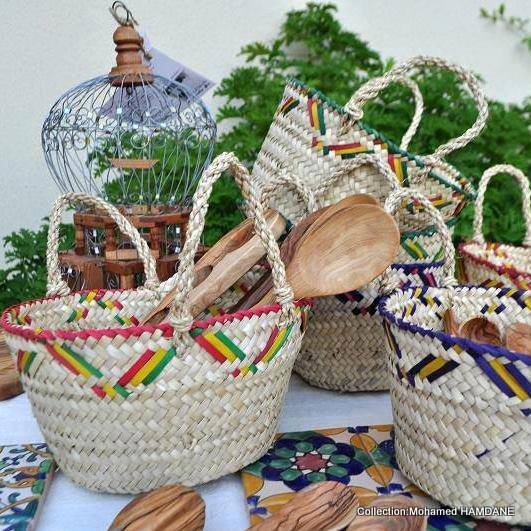

Le couffin tunisien date de plusieurs siècles et était incontournable, que ce soit pour aller faire les courses, pour sortir, ou y porter des vêtements.
C’est là un vrai savoir-faire artisanal. Djerba, Gabès, Kasserine et Nabeul sont des villes réputées pour leur fabrication.s.

Tapis
La Tunisie est riche d’une longue tradition de tissage de tapis. On raconte qu’au 19e siècle, la fille du gouverneur ottoman aurait été la première, à Kairouan, à tisser un tapis de haute laine pour l’offrir à l'une des mosquées de la ville. Puis la tradition se serait perpétuée, faisant de Kairouan la capitale du tapis en Tunisie.